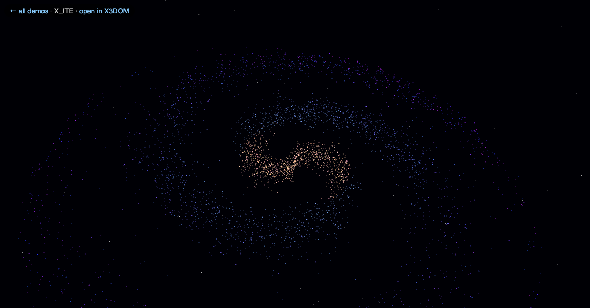
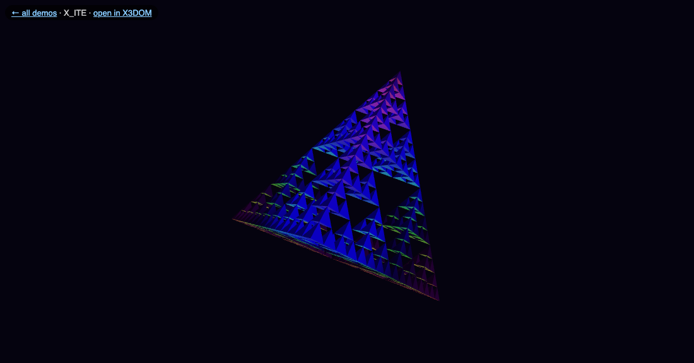
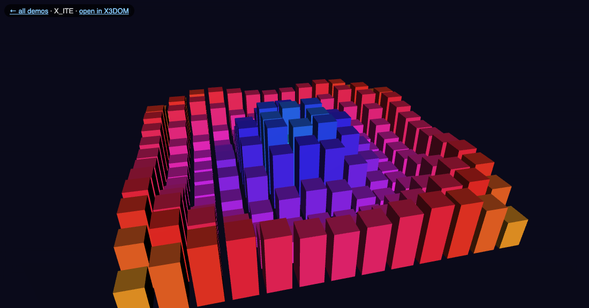
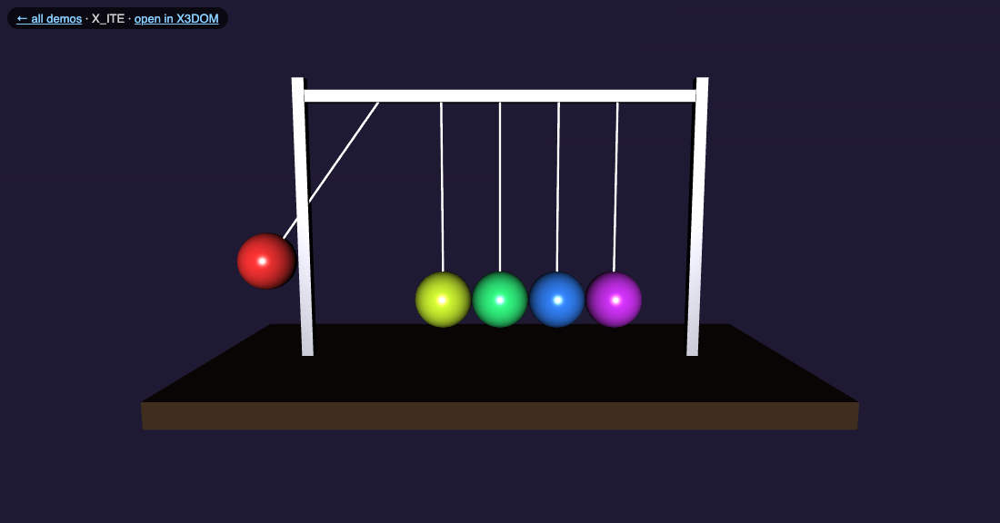
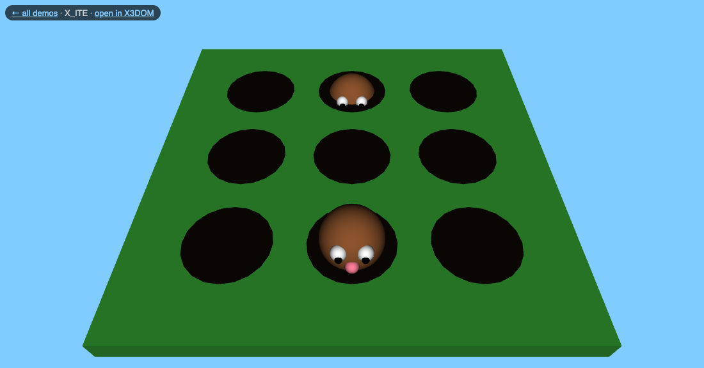
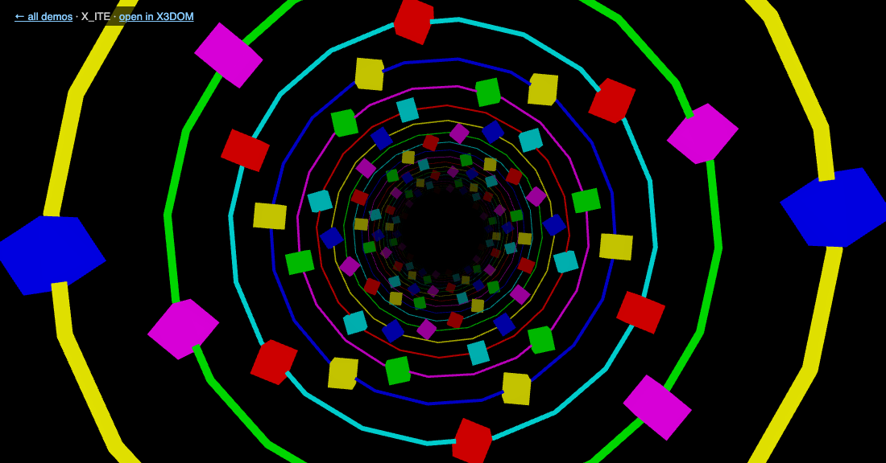
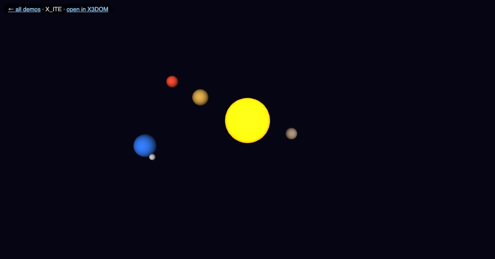
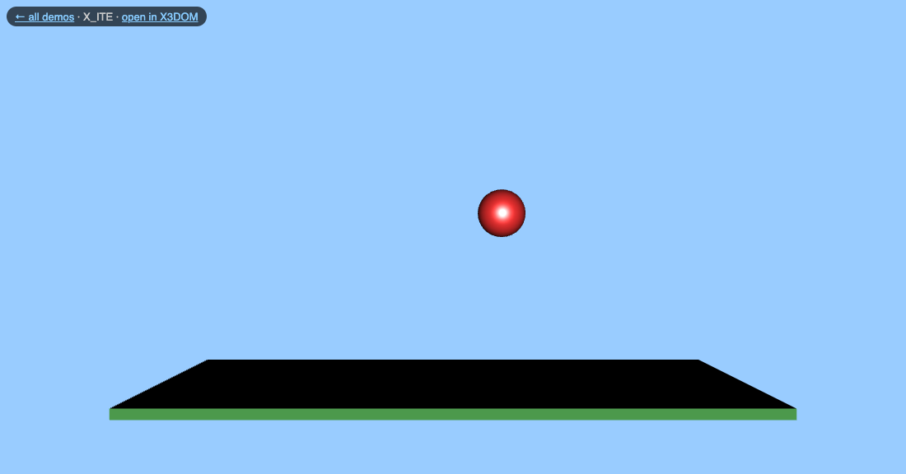
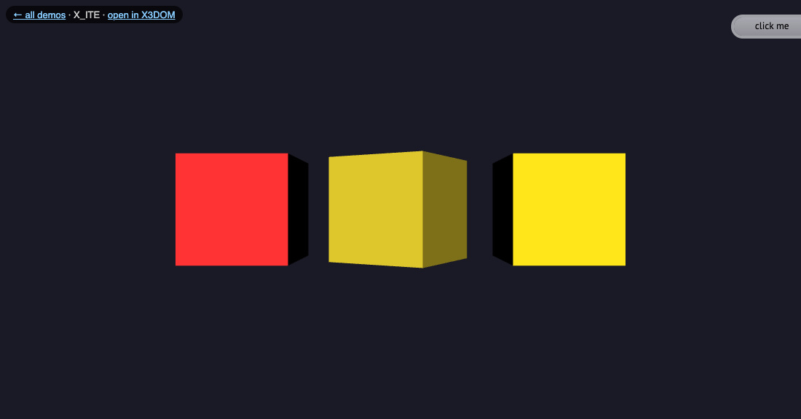

6,000 stars in two spiral arms with differential rotation: the core spins faster than the rim.
PointSet + Color, 3 independent pivots · drag to orbitX_ITE · X3DOM · .x3d
A 256-tetrahedron fractal that tumbles, breathes, and is lit by a colour-cycling light.
IndexedFaceSet, per-vertex Color, animated DirectionalLight · drag to orbitX_ITE · X3DOM · .x3d
A 13x13 grid of bars driven by a travelling radial wave, like a sound visualiser.
169 PositionInterpolators (used as scale) on one TimeSensor · drag to orbitX_ITE · X3DOM · .x3d
Five chrome balls and the classic click-clack, with a hand-sampled pendulum.
OrientationInterpolator sampled from cos(), nested pivots · watchX_ITE · X3DOM · .x3d
Nine moles pop up on their own clocks. Click one to squash it and flash red.
TouchSensor -> TimeSensor -> Position/ColorInterpolator, no scripts · click the molesX_ITE · X3DOM · .x3d
An endless seamless fly-through of glowing rings, with fog and a slow roll.
Fog, emissive materials, looping translation of the world · watchX_ITE · X3DOM · .x3d
Sun, four planets and a moon on spinning orbit pivots.
TimeSensor + OrientationInterpolator · drag to orbitX_ITE · X3DOM · .x3d
A ball that squashes and stretches as it hops across a lawn.
two PositionInterpolators on one clock · watchX_ITE · X3DOM · .x3d
Three cubes. Click one and it flips and changes colour.
TouchSensor -> TimeSensor -> Color/OrientationInterpolator · click the cubesX_ITE · X3DOM · .x3d